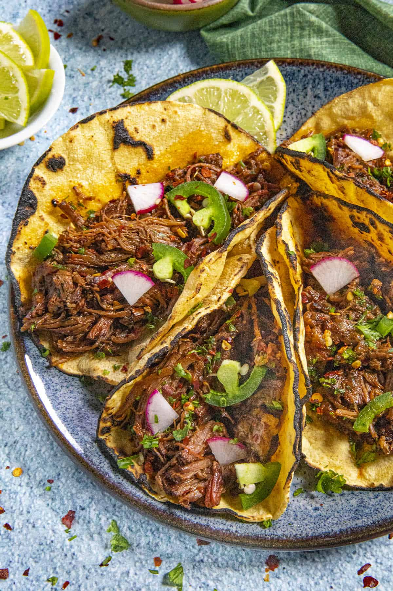

Delicious tacos are my weekness, and Barbacoa tacos are my meat of choice when it comes to tacos. They are so flavorful and tender just hard not to love them. The ingredients I am providing are very basic but there is so many ways you can add flavor to this type of meat.